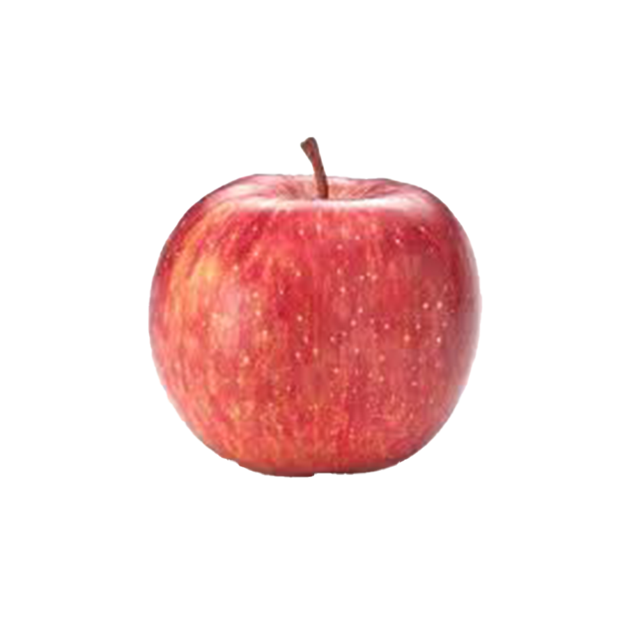
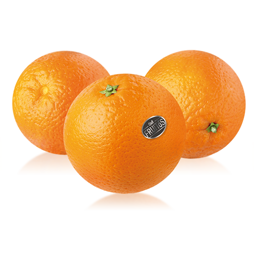
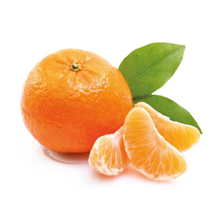
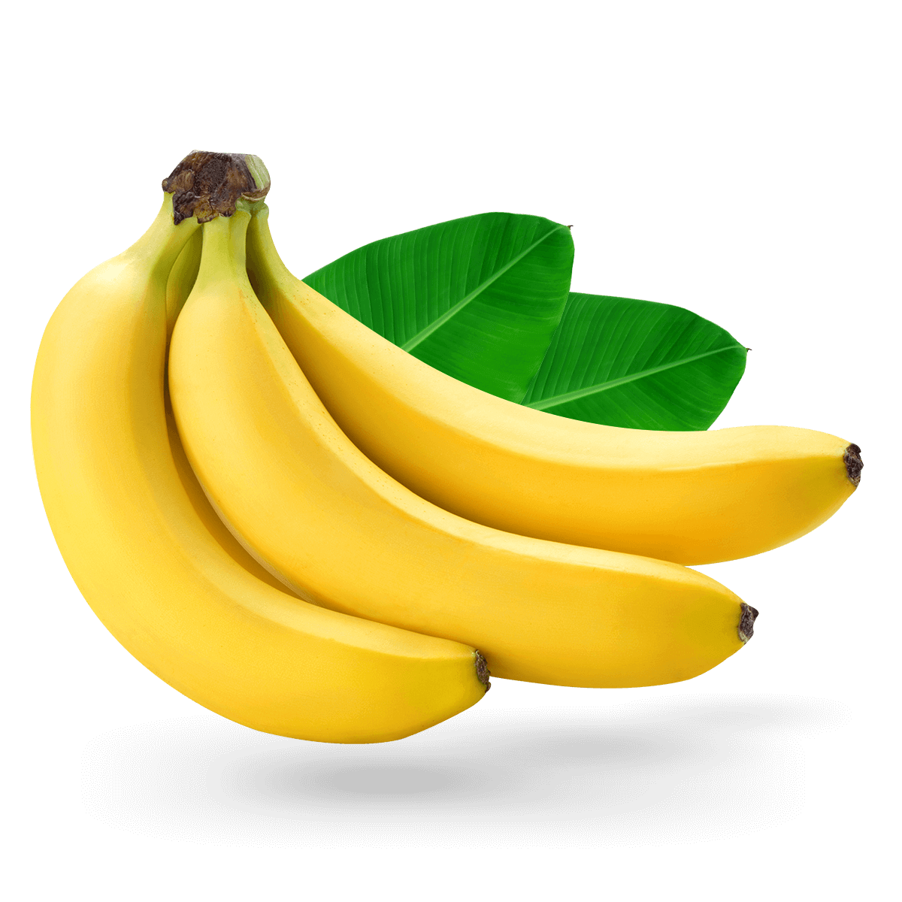
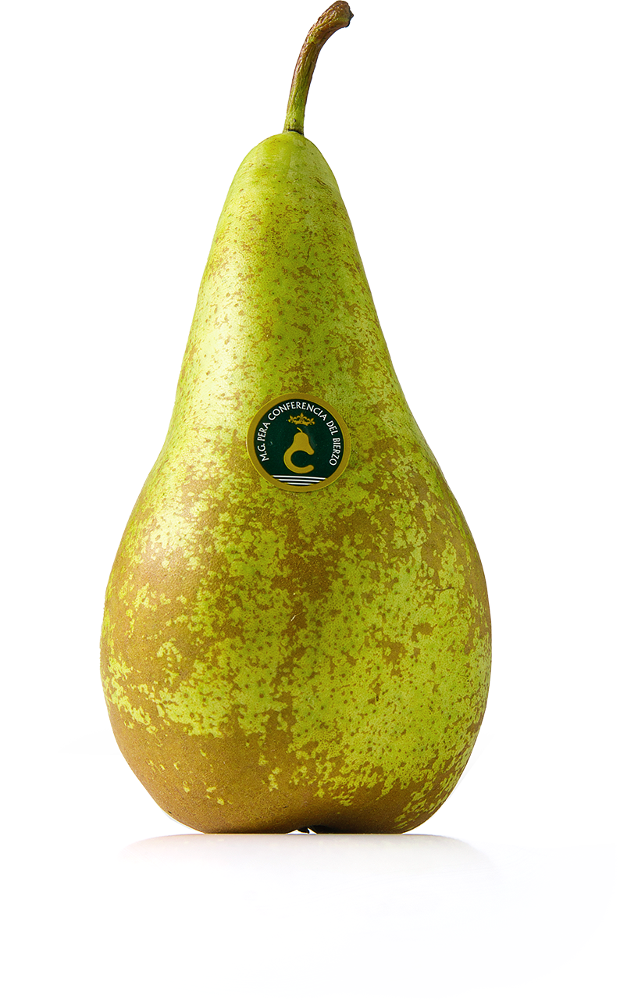
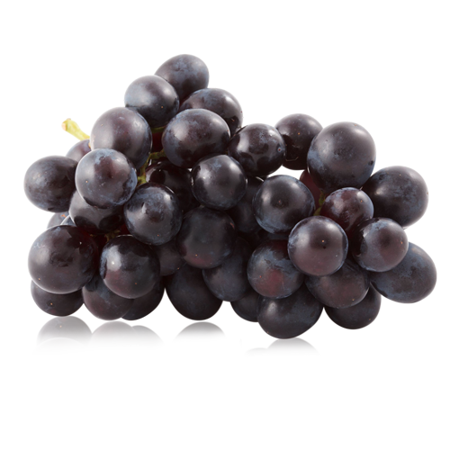
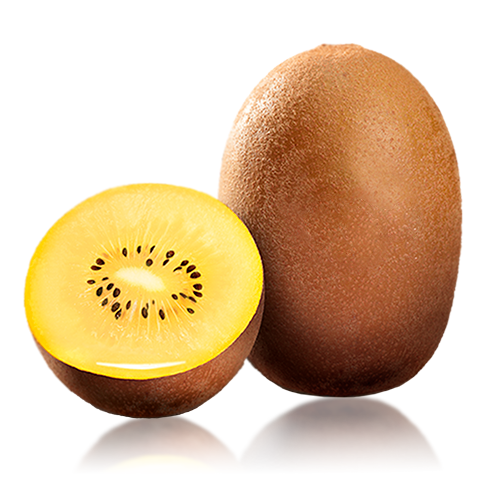
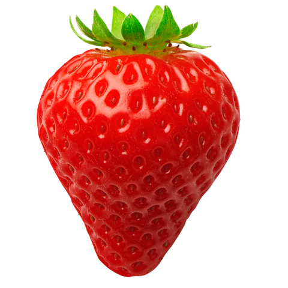
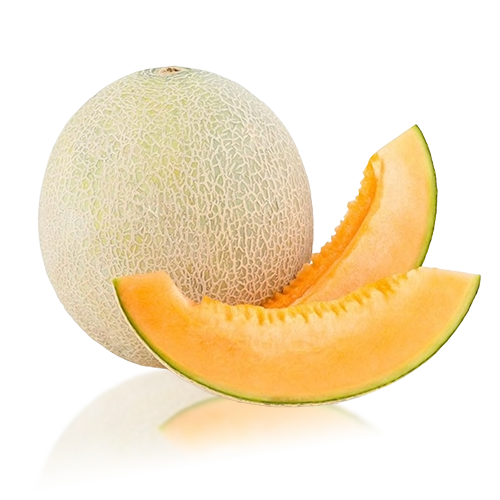

Llista de Preus Mitjans de Fruites (€/kg)
| Imatge | Fruita | Preu Mitjà Estimat (€/kg) | Temporada Principal |
|---|---|---|---|
 |
Poma | 1,80 - 2,50 | Tot l'any / Tardor |
 |
Taronja | 1,00 - 1,80 | Hivern |
 |
Mandarina | 1,50 - 2,20 | Tardor-Hivern |
 |
Plàtan (Canari) | 1,80 - 2,50 | Tot l'any |
 |
Pera | 1,90 - 2,80 | Tot l'any / Tardor |
 |
Raïm | 3,50 - 5,00 | Final Estiu-Tardor |
 |
Kiwi | 2,80 - 4,00 | Tot l'any / Tardor-Hivern |
 |
Maduixa | 3,50 - 5,50 | Primavera |
 |
Meló | 1,20 - 2,50 | Estiu |